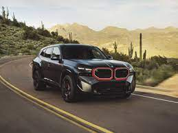

The acronym BMW stands for Bayerische Motoren Werke GmbH, which roughly translates to the Bavarian Engine Works Company. The name harks back to the company’s origin in the German state of Bavaria. It also indicates BMW's original product range: engines for various applications. Today's BMW AG has its origin in Rapp-Motorenwerke GmbH, which began producing aircraft engines in 1913. During the First World War, Rapp supplied the air force of the German Empire. At that time, automobiles had not yet broken through into the mainstream. If you wanted to travel long distances on land, you went by train.
